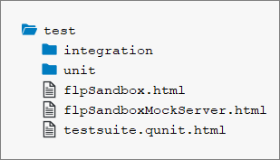
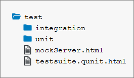

The 3 main folders in an application are the root folder, the webapp folder and the
test folder. Regarding their structure, the webapp folder should be inside the
root folder, and the test folder should be located inside the
webapp folder, as shown below:
The image above shows a screenshot taken from SAP Web IDE, and is only meant to serve as an example. This applies to all images contained within this topic.
The root Folder
The root folder should contain files that are not part of your application coding.
Examples are build configuration files, such as a pom.xml for
maven or a Gruntfile.js for node/grunt, and documentation files
like readme.md or txt. These files may
also be grouped in folders if needed. For example, you could group all documentation
files into a doc folder.
The webapp Folder
The webapp folder contains all the code that is related to the
application. This means running and extending the application using the
extensibility mechanism offered by SAPUI5. This includes
the JavaScript files for the logic, view files written in xml, html, json or js
format, and also files for localization, such as
i18n.properties files. Any files that are only relevant for
testing should be put inside the test folder. For more details
about the webapp folder, see the section below. For more
information about extensibility and localization, see Extending Apps and Localization respectively.
The test Folder
The test folder contains all of the files needed for running automated
tests for your application, as well as for launching your application in a sandbox
mode so that you can do manual testing. For more details about the
test folder, see the section below.
Why Use 3 Separate Folders?
To achieve sound performance when loading your application, the code you deploy to your
production servers should only contain a component-preload.js
and a manifest.json file. This means that when you create a
package with a build, it is easier if all the files you really want to deploy are
inside one folder. This is true no matter which build framework
you use. We recommend using the webapp folder for this. Nothing
inside the root folder is needed for running the app, so it's
not included on a production server serving your application. The content of the
test folder has to be executed in design time and during
the automated test execution on a central server. We choose to include it inside the
webapp folder, to be able to reference resources of the
webapp folder relatively to the test
folder. This folder has to be excluded when you are building a
component-preload.js. You should never reference resources
of the test folder from your application, because when you
deploy to a productive environment, the resource cannot be loaded. For more
information about the manifest.json file, see Descriptor for Applications, Components, and Libraries.
webapp Folder in DetailAside from the test folder, the webapp folder contains
3 folders related to the MVC (model, view, controller) pattern used in SAPUI5, as well as a
localization folder and a local-services folder used for emulating OData services.
Each of these folders is outlined below.
For standalone app, this folder also contains an index.html file that is used to start the app and to instantiate the
component. If your apps is built for the SAP Fiori launchpad no index.html file is created but only files for
testing the app in the FLP sandbox.
The view Folder
In the view folder, you should put all SAPUI5
views and fragments. This folder should
not contain any application logic, so no JavaScript files unless you are using
JavaScript views. JavaScript views are not recommended because it is easier to mix
controller logic when building up a view. In declarative views this is not possible.
In the example shown below, the view folder contains a mixture
of views and fragments. If this folder gets too big, you might consider adding
subfolders to group views by their semantics. In this example for instance, you
could add a detail folder and move all views that are related
to the detail area of your application to this subfolder.
For more information about views and fragments, see Views and Reusing UI Parts: Fragments respectively.
The controller Folder
The controller folder contains all the controllers used by your views, and
might also contain additional logic files that are used by one or more controllers.
The structure of the controller folder should mirror the
view folder. If a view is in a subfolder, the controller of
the view should also be in the corresponding subfolder.
The model
Folder
The model folder is where you put any files needed for creating models and
logic relating to model data. This includes grouping, filtering and formatting
data.
In the above example, models.js is a factory for creating models that are
used by our application.
Localization Folder -
i18n
We also have one dedicated folder for localization files. An SAPUI5 app will
potentially be translated into many languages. Each of those languages has its own
.properties file. Note that although the
ResourceModel is an SAPUI5 model from a
technical point of view, the localization folder is not part of
the model folder. This is because the
.properties files have a different semantic since they are
used for translation. The code needed to instantiate the
ResourceModel is located in the model
folder. For more information about localization, see Localization. For more
information about the ResourceModel, see the API Reference in the Demo
Kit.
The path to the i18n file must not exceed 100
characters.
The localService Folder
The localService folder is used to emulate OData services for tests or as a
preview mode for your application. It is also intended for design-time tools since
it contains the metadata.xml file, which describes the backend
connection of your application. You need to have one
metadata.xml file per OData service, which exactly matches
the remote service’s metadata. The location of this file also needs to be maintained
in the data sources section of the manifest.json file. For more
information, see Descriptor for Applications, Components, and Libraries.
For integration tests, it is helpful if you are able to mock your back end with stable data. A second use case for this is for running an
application in a preview mode so that it serves data locally instead of connecting to a back end. This is why
this folder also contains files necessary for starting up the OData V2 mock server. The data served by the mock server is put inside
the mockdata folder. If you need to, you can also include multiple sets of mock data here, by giving each set its
own folder. For more information about the OData V2 mock server, see the API
Reference in the Demo Kit.
For information about mock server functionality for OData V4, see OData V4 Mock Server.
test Folder in Detail|
|
|
|---|---|
|
 |
 |
The test folder contains three sets of files: files related to unit tests, files related to integration tests, and html
files for either launching the tests or for testing the application manually. Inside the unit folder, the
structure of the webapp folder is replicated for the files that are being tested.
In this example shown above, the files being tested are
webapp/model/formatter.js and
webapp/model/models.js. You may be using JavaScript files
or html files to run your tests, depending on the runners you are executing your
tests with. We recommend using .js files for writing your
tests, so that you can run them with tools such as karma for instance.
The integration folder contains the OPA tests of your application. We
decided to separate our unit and integration tests, since the execution time of the
integration tests is much longer. While the unit tests run in less than 10 seconds,
the integration tests run for over 2 minutes. These times will vary a lot depending
on the size of your project. If the project grows and grows, the difference in the
execution time will also grow. For this reason, we recommend making both kind of
tests separately executable so that developers can choose which sets of tests they
want to run during design time.